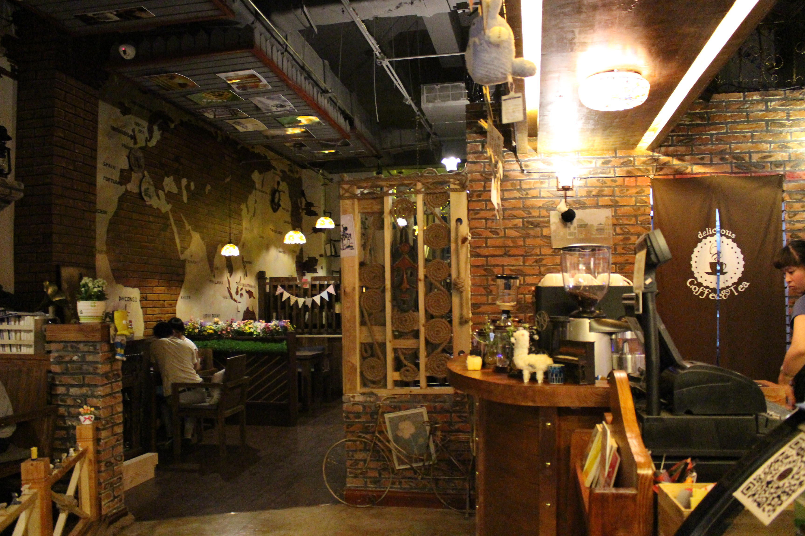
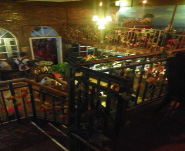

咖啡加盟开业知识准备您的当前位置:首页>罗纳动态>咖啡加盟开业知识准备
-
有一种误解是：一直吸烟，还不是健健康康地活到了八十多岁
2016-11-08
戒烟的理由就一条：对自己和身边人的健康好。 继续抽烟的理由却总是很多，不少老烟枪为了能继续吸烟，会有很多辩解，今天...
-
咖啡加盟:传统单体咖啡店下一步该何去何从？
2016-11-08
咖啡加盟馆品牌越开越多，但想加盟的投资者从来没有面临像今天这样复杂的局面：以星巴克把门店开到了厦门这样的二线城市为标...
-

咖啡馆里如何为顾客提供优质服务|咖啡加盟
2016-11-08
一一、如何提供优质服务 为顾客服务的六个等级 ☆有问必答 ☆保手寺沟通 ☆专人负责 ☆超常服务 ☆专业顾...
-

选择单干？还是加盟？我来给你支招！
2016-11-08
据国家统计局的数据，2016年上半年，中国餐饮收入低于去年同期的增幅，整体市场发展速度减慢并趋于平缓。 但餐饮行业...